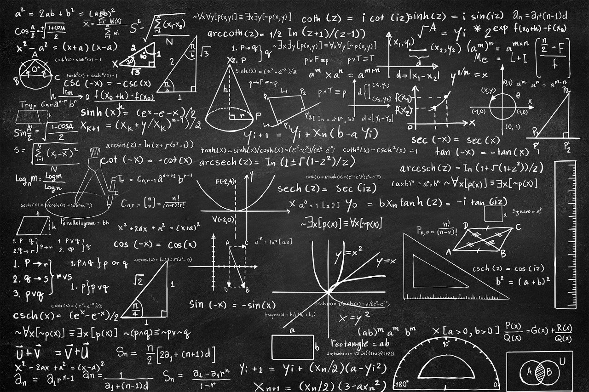

Engineering
I enjoy doing math because not only is math a basis of science, but also the logic I use in math can be used to solve real life problems. Also, I enjoy thinking about problems thoroughly and learning new things.
I enjoy chemistry and physics more than biology because I like to understand concepts more than just memorizing things. Moreover, learning science makes us informed citizens of the world.

Finally, I enjoy engineering because I like designing something that may be useful for the world. It also sometimes involve coding and a sense of logic, which is also something I'm interested in.